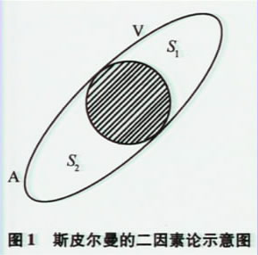
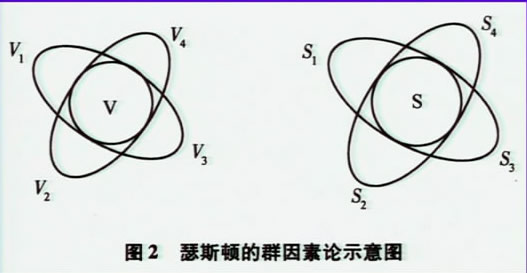
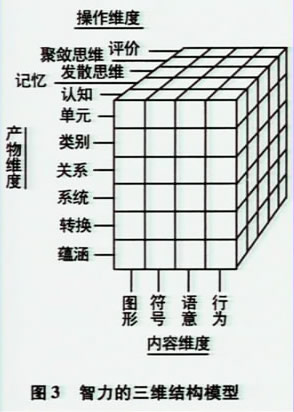
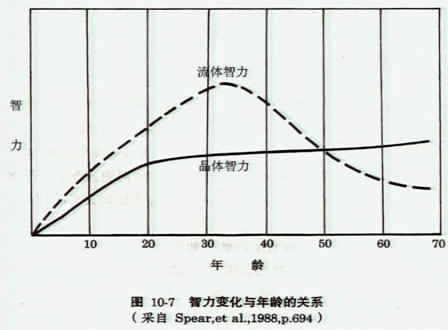
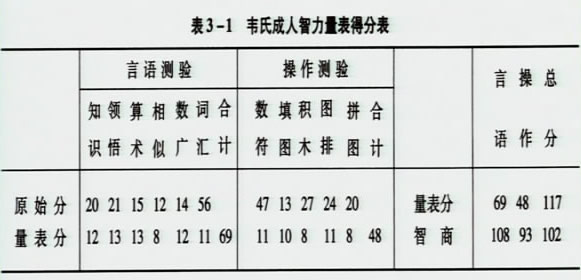
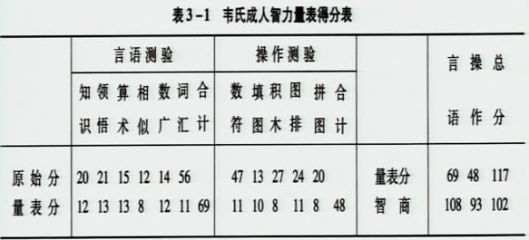
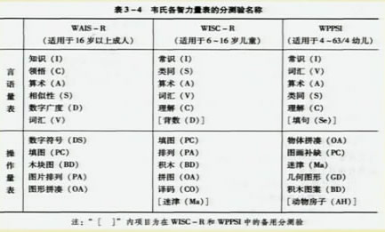

00:00
本章学习目的：
掌握每个心理测验的使用方法。主要包括：测验的实施、记分、结果解释方法。
学会如何选择心理测验
本章内容：
|
第一节 智力测验
第二节 人格测验
第三节 心理与行为问题评估
第四节 应激及相关问题评估
|
01:28
第一节 智力测验
*对智力的看法
一、智力是学习的能力
二、智力是适应环境的能力
三、智力是抽象思维能力
-比内:智力是一种判断的能力、创造的能力、适应环境的能力，善于判断、善于理解、善于推理是智力的三个要素。
四、对智力的综合理解
-韦克斯勒：智力是一个人行动有目的、思维合理、应付环境有效的聚集的或全面的才能。
02:46
*智力的多种理论
1.斯皮尔曼的两因素论
-一个一般因素G
-若干个特殊因素S1、S2、S3、S4等等

2. 瑟斯顿的多因素论
瑟斯顿与基本心理能力
-语词理解、数字、空间、知觉速度、词语流畅性、联想记忆、归纳推理。

04:41
3.吉尔福特的三维结构模型（吉尔福特与智慧结构理论）
-内容：图形、符号、语意、行为
-操作：认知、记忆、发散思维、聚敛思维、评价
-产物：单元、类别、关系、系统、转换、蕴涵 |
 |
4.卡特尔的流体和晶体智力理论
-流体智力：十四、五岁达到高峰；
-晶体智力：直到60岁才逐渐衰退。

06:14
5.维尔隆的智力层次理论结构
6.斯滕博格的智力三重结构理论
*智力测验工具
一、个别智力测验工具：
1.比内量表
a.比内-西蒙量表的发展
b.斯坦福-比内量表的发展
c.中国比内量表的发展
2.韦氏智力量表
a.中国修订韦氏成人智力量表（WAIS-RC)
b.韦氏儿童智力量表中国修订本（WISC-CR）
c.中国韦氏幼儿智力量表（C-WYCSI)
二、团体智力测验工具
1.陆军甲种和乙种测验
2.瑞文渐进测验
3.多水平团体智力测验
07:26
*韦氏测验的一般特点
1.10到12个分测验：多个分测验使我们不仅得到总IQ，而且可以分析个体智力上的强点和弱点。
2.言语量表和操作量表由5到6个分测验组成。根据这种区分，施测者可以单独评价言语理解和知觉组织能力。
3.共同的IQ记分系统：对所有测验和所有的年龄组，IQ的平均值为100，标准差为15，而且在每个分测验上，平均分为10，标准差为3.
4.不同年龄组有相同的分测验：这不仅方便施测者，而且有助于测验之间的相互比较。
08:58
第一单元 韦氏成人智力测验（WAIS-RC）
（Wechsler Adult Intelligence Scale, WAIS ）
一、学习目标
掌握韦氏测验的实施、记分及结果解释方法。
二、工作程序
（一）.测验材料：本教材选用的是龚耀先教授1981年修订的中文版本（WAIS-RC）。
（二）.适用范围：适用于16岁以上的被试者，分农村和城市用两式。
（三）.实测步骤：
1.严格按照《手册》规定的实施方法进行；
2.一般按照先言语后操作的顺序进行，但在特殊情况下可适当改变；
3.测验通常都是一次完成，对于容易疲劳或动作缓慢者也可分次完成；
4.对于有时间限制的项目，以反应的速度和正确性记分；不限时间的项目，按反应的质量给予不同的分数。
（四）.WAIS-RC 各分测验的主要内容及功能：
14:18
*.言语部分：包括六个分测验： 知识（I）、领悟（C）、算术（A）、相似性（S）、数字广度（D）、词汇（V）。
1.知识：
包括29个一般性知识的题目，要求被试用几句话或几个数字回答，问题按由易到难排列。一般从第5题开始施测，若5和6题均失败便回头做1～4项，则不再继续下去。
被试反应以“0”或“1”分计算。
主要测量人的知识广度、一般的学习及接受能力、对材料的记忆及对日常事务的认识能力。
2. 领悟：
包括14个按难易程度排列的问题，要求被试者回答在某一情景下最佳的生活方式和对日常成语的解释，或对某一事件说明为什么。
一般从第3题开始，如果3、4、或5项中任何一项失败，便回头做1、2项，若连续4题失败，则不再继续下去。根据回答质量分别记“0，“1”或“2”分。
主要测量判断能力，运用实际知识解决新问题的能力以及一般知识。
3.算术
包括14个算术题，依难度排列。被试只能用心算来解答，一般小学文化的人就可以完成。
一般从第3题开始，如果3和4均得0分，便进行1和2题，若连续4道题失败，则停止该测验。记分为“0”或“1”分，速度快者可加分。
算术测验主要测量数学计算的推理能力及主动注意的能力。
22:24
4.相似性
包括13对名词，每对词表示的事物都有共同性，要求被试者概括出两者在什么地方相似。
题目按难度排列，被试连续4题失败时，停止该项测验。依照概括的程度和质量分别计以“0”，“1”或“2”分。
次测验设计用来测量逻辑思维能力、抽象思维能力与概括能力。
5.数字广度
包括顺背和倒背两个部分，顺背最多由12位数字组成，倒背最多由10位数组成，每一部分由易到难排列。
任何一项1试背得正确，便继续进行下一项，如果有错误便进行同项的2试，两试均失败停止该部分测验。
两部分念出数目的速度均按每一秒一个数字。总分为顺背和倒背分数的总和。
此测验主要测量人的注意力和短时记忆能力。
6.词汇
包括40个词汇，按难易排列，要求被试者解释词义。
言语能力较差被试从第一题开始做，一般被试者从第4题开始，如果4～8项内有一个得0分，便回头测1～3题。被试者若连续5个词解释不出则不再继续进行。
根据被试者回答的正确程度分别记“0”，“1”或“2”分。
本测验主要测量人的言语理解能力，同时了解其知识范围和文化背景。
27:51
*.操作部分：包括五个分测验： 数字符号（DS）、填图（PC）、木块图（BD）、图片排列（PA）、图形拼凑（OA），有时限。
（详细内容请参考教材）
（五）.测验的记分：
计算每项分测验的原始分
原始分换算成量表分
换算成智商（IQ）： VIQ（言语智商）、PIQ（操作智商）、FIQ（总智商）
韦氏成人智力量表得分表

25:32

（六）结果的解释
1.依据韦克斯勒对智力水平的分类，将被试的总智商、言语智商、操作智商的得分做出相应的等级评定；
2.不要采用绝对化语言，妄下定论；
3.正确认识IQ；
4.根据各分测验所测各种能力，指出被试的优势和不足方面；
5.针对不足提出一些建议和补救措施以使被试的优势得以更好发挥。
29:12
三、相关知识
（一）关于韦氏智力测验

1.韦氏儿童智力量表修订本
2.韦氏成人智力量表修订本
3.韦氏学龄前及幼儿智力量表
31:29
（二）对韦氏智力量表的评价：
优点：
1. 测验具有复杂的结构，不但有言语项目，还有操作项目，可同时提供3个智商分数和多个分测验分数。整个韦氏测验的三套量表互相衔接，适用的年龄范围可从幼儿到老年，是一套比较完整的智力量表。
2. 用离差智商代替比率智商，既克服了计算成人智商的困难，又解决了在智商变异上长期困扰人们的问题。
3. 临床应用多，积累了大量的资料，已成为临床测验中的重要工具。
缺点：
1. 三套量表的衔接性较差。
2. 测验起点偏难，韦氏量表对于测量智力极高和极低的被试不大适用。
3. 有的分测验项目过多（如词汇），增加测验时间；有的偏少（如物体拼凑），难以调整项目难度。
4.施测程序复杂费时。
-龚耀先计算了WAIS-RC各分测验与言语量表、操作量表和全量表得分的相关，结果言语部分以知识、相似性和词汇分测验为代表测验，操作部分以画图填充、木块图案和图片排列为代表测验，这六个分测验可组合成简式量表。
37：22
四、注意事项
1.在操作修订韦氏量表时，一定要按本量表的标准程序进行，要经常阅读手册，除非在临床应用时，应某些特殊情况，在不得已的情况下可适当变动。
2.主试者必须受过进行个别测验和团体测验的训练，掌握本量表的测量技术——提问技术、鼓励回答的技巧、书写回答格式、记分方法、记分标准、原始分（粗分）换算标准分（量表分）的方法，计算智商的方法，对结果作解释等。
3.测验材料应保持有条不紊，便于操作。
4.测验时间要选择恰当，这是与被试者建立良好协调关系所必需的。被试应在身体条件等状态良好的情况下接受测试。
5.主试者应努力取得被试者的合作，尽量使他们保持对测验的兴趣，多用一些鼓励的语言。但不说“对”，“不错”或“再来试试看”等。
6.有些项目无时限，但不是让被试者任意延长，一般来说，10秒或15秒钟可以考虑好回答。
7.每一个测题均有指导语，主试即使很有经验也要依照原语句，不得随意更改。
8.对被试的每一项目的回答均按原话记录，并将分数记录在该项后面，不要漏掉免答项。